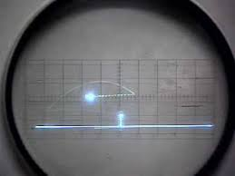

Tennis for Two

Tennis for Two is one of the first examples of video game; it was designed by the American
William Higinbotham in 1958. In particular, it was the first to use a graphic display as output.
The controls consist of a button to throw the ball, a paddle to orient it and an additional reset
button to make it reappear. The game was very successful, so much that people lined up to
take advantage of it.
When it was produced
Tennis for two was born in 1958
Popularity
Tennis for two was a very popular game, during the three day fair (to present the game)
there were players lining up to watch the game, especially high school students.
It will became more popular over the years because it was one of the first games in the
world.
Dimension
Tennis for two is a video game so the dimensions depend on those of the TV.
Purpose of use
Tennis for two was created to entertain visitors to the Brookhaven National Laboratory,
where the creator worked.
Style
The video game’s style was very simply, only the ground, the net and the ball were visible on
the screen
Age of users
The age of the players could vary widely, given the fact that it was usable by everyone
Differences
it had a much worse graphic quality than today's video games. it had a much worse graphics
quality than today's video games.
Then today video games have multiple modes and a storyline.
They include many characters, the online game is present in almost all video games. Unlike
modern tennis games, players are not present in tennis for two
Kind of technology
Tennis for Two is an electronic game that was created using a Donner 30 analog computer,
an oscilloscope, relay and a few other components.
Price
Its price now, in perfect condition, is 99 euros
Time spent using it
Despite its total lack of graphic fantasy or complicated controls, this game conquered all who
participated in it. The players scored their scores and challenge each others, spending whole
afternoons in this simple game.
An Interview
Here is a short interview with a gamer.
a) Why do you like tennis for two?
b) I like it because I want to explore this new project
a) Does the world of video games have potential?
b) Yes, because I believe that in the future the kids will play with it and more and more ideas
will be born.
a) ok thank you.